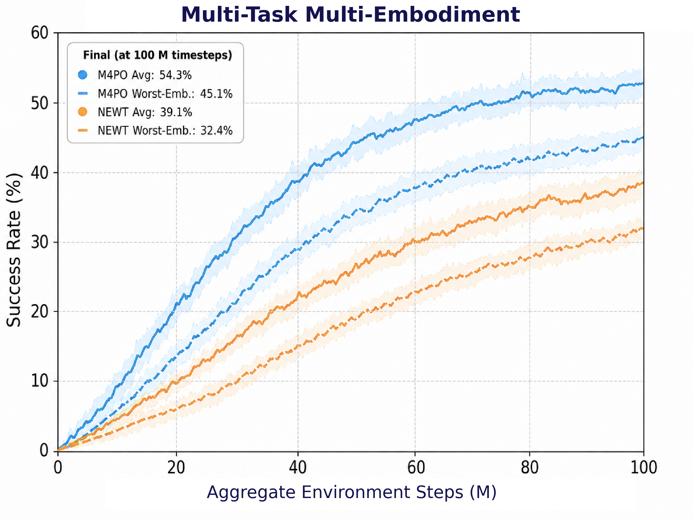
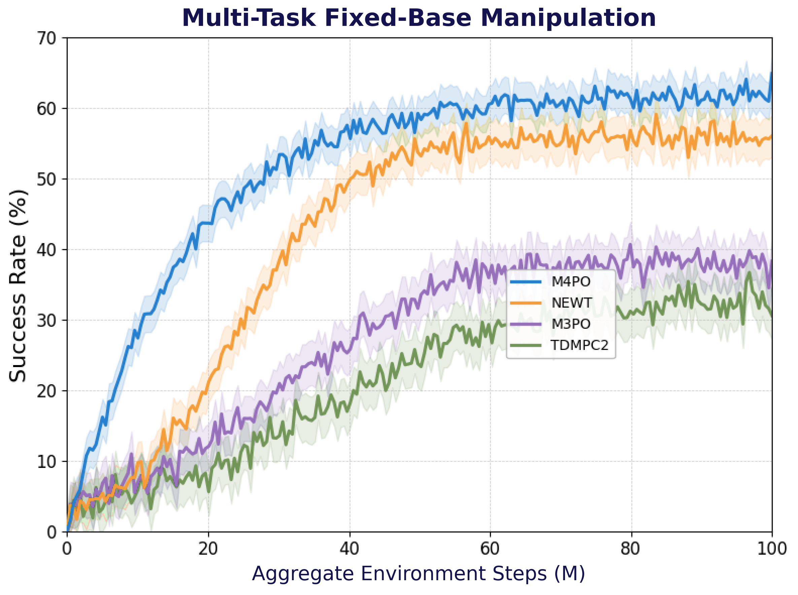
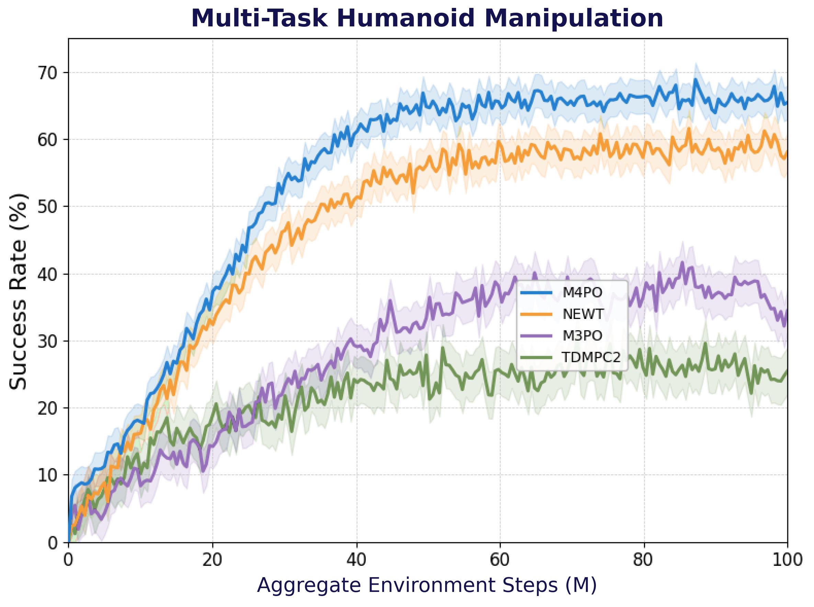

{kind=link}
Observe & condition
Combine RGB-D, proprioception, structured state, task language, and embodiment context.
World models for embodied intelligence
Massively Multi-Task Multi-Embodiment
Model-Based Policy Optimization
One world model. Many tasks. Different bodies.
Articulated manipulation. A Franka arm interacts with a cabinet.
Full clipMulti-object manipulation. A UR5 arm stacks objects.
Full clipHumanoid manipulation. A Unitree G1 lifts an object.
Full clipSupplied supplementary simulation clips at normal speed. Franka and UR5 loop an 8-second excerpt; G1 shows the full clip.
54.3%
Average success
Across tasks & embodiments
+15.2pp
Over the NEWT baseline
Multi-embodiment average success
85/100
Successful hardware trials
Across five evaluation conditions
Reported in the manuscript · Evaluation details below
01 / The idea
Robots can share an understanding of a task without sharing the same body.
M4PO studies how a single model-based policy can learn manipulation across tasks and robot embodiments. Its hierarchical world model separates task progress from embodiment-specific dynamics, then brings them together to predict what happens next.
Multimodal observations and a shared, masked action interface connect different robots to the same model. Stochastic planning in latent space turns those predictions into actions, spanning fixed-base, dexterous, and humanoid manipulation.
Read the full paper02 / The method
A task–embodiment hierarchy connects perception, prediction, and control.
Combine RGB-D, proprioception, structured state, task language, and embodiment context.
Represent task progress and robot state separately, while coupling their predicted transitions.
Score stochastic action sequences in latent space; execute through normalized, embodiment-masked controls.
Train the world model and planner-policy from fresh rollouts, with value discrepancy guiding exploration.
03 / The evidence
Manuscript-reported results on IsaacLab manipulation benchmarks.
Three seeds · 100 evaluation episodes per task–embodiment pair. The comparisons below use the paper’s IsaacLab settings, distinct from NEWT’s 200-task MMBench.
M4PO improves both average performance and the least-successful embodiment.
| Metric ↑ higher is better | NEWT | M4PO |
|---|---|---|
| Average success (%) | 39.1 | 54.3 |
| Worst-embodiment success (%) | 32.4 | 45.1 |
| Average return | 0.46 | 0.62 |
| AUC | 0.26 | 0.37 |

Each policy covers multiple tasks within one manipulation paradigm.
| Method | Dexterous | Fixed-base | Humanoid | Average |
|---|---|---|---|---|
| TD-MPC2 | 25.4 | 32.5 | 25.0 | 27.6 |
| M3PO | 30.2 | 38.5 | 36.0 | 34.9 |
| NEWT | 50.2 | 56.0 | 59.0 | 55.1 |
| M4PO | 55.3 | 62.0 | 66.2 | 61.2 |


The expanded setting also measures average and worst-embodiment success.
| Method | Average | Worst embodiment |
|---|---|---|
| NEWT | 36.4 | 23.7 |
| M4PO | 50.8 | 37.2 |
Figures and tables from the M4PO manuscript. Result & media provenance
04 / Beyond simulation
85/100
Successful trials reported in the manuscript
Five conditions. Twenty trials each. Policy parameters stay fixed during hardware evaluation; G1-specific adaptation happens beforehand in simulation.
| Robot / condition | Successes |
|---|---|
| Unitree G1Box lifting without images | 18 / 20 |
| FrankaFruit picking | 19 / 20 |
| FrankaFruit sorting | 15 / 20 |
| FrankaCube on cylinder | 17 / 20 |
| FrankaCylinder on cube | 16 / 20 |
Fruit sorting tests a task composition excluded from simulation training.
Explore the project
Read the method, inspect the implementation, and explore the supplementary material.
{kind=link}
{kind=link}
{kind=link}